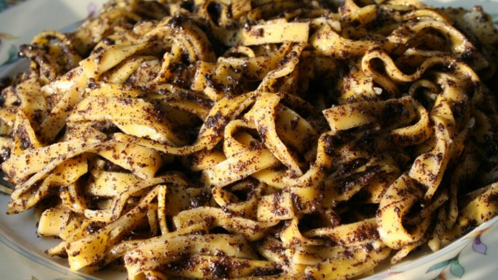
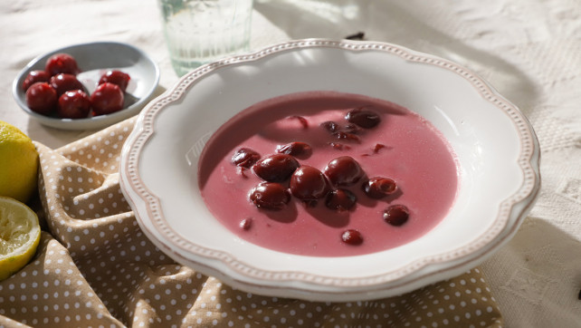
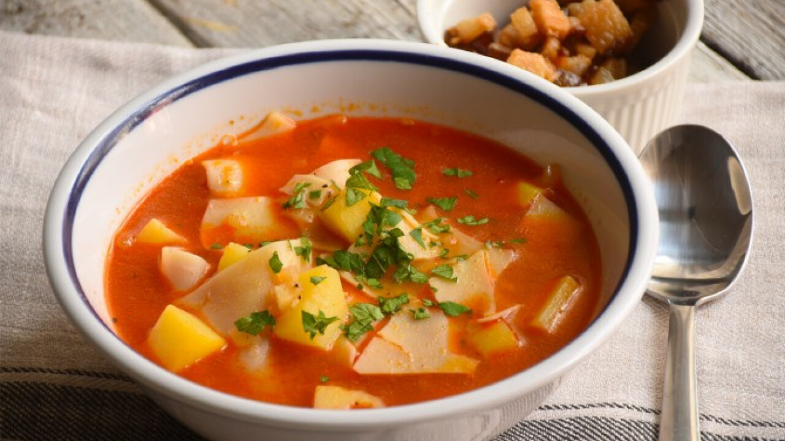

Mechwart menza
Ha szeretnél egy jót kajálni, akkor itt a helyed!
Hétfői menü receptjei:

Gulyásleves
- Hozzávalók:
- 1ek zsír
- 1db vöröshagyma
- 50 dkg sertéscomb
- só
- bors
- 1ek pirospaprika
- 1tk ételízesítő
- 1db sárgarépa
- 1db petrezselyemgyökér
- 1 szelet zeller
- 1db paprika
- 1db paradicsom
- 1mk egész bors
- 1tk őrölt keménymag
- 30dkg krumpli
Allergének: zeller
Elkészítés
- A gulyásleves elkészítéséhez a felhevített zsíron üvegesre pároljuk az apróra vágott vöröshagymát. Ezután hozzáadjuk a felkockázott, sózott, borsozott húst, majd fehéredésig pirítjuk.
- Amikor kifehéredett, megszórjuk a pirospaprikával és az ételízesítővel, felöntjük 0,5 dl vízzel, majd pár percig kevergetve pároljuk. Ezután felöntjük annyi vízzel, hogy jól ellepje, majd félpuhára főzzük a húst.
- Amikor a hús félig megpuhult, hozzáadjuk az ízlés szerint felvágott sárgarépát, petrezselymet, zellert, paprikát és a paradicsomot, majd még egy kevés vízzel felöntjük. Hozzáadjuk az egész borsokat, a köménymagot és a sót, és így főzzük tovább.
- Amikor a hús már majdnem teljesen megpuhult (kb. 35 perc múlva), beletesszük a kockára vágott krumplit, és 10 perc alatt teljesen készre főzzük a levest.
- Tálaláskor a leves mellé kínálhatunk kenyérszeleteket vagy pogácsát.
Rántott hús, sült krumplival
- Hozzávalók:
- Zsemlemorzsa
- tojás
- liszt
- olaj
- hús
- krumpli
- liszt
- tojás
Allergének
Elkészítés
- A nyers húst megforgatjuk egy tál tojássárgájában és egy másik tál lisztben.
- A megforgatott húsokat belehelyezzük egy lábasba, amibe öntünk olajat, majd megsütjük.
- Egy zacskó sült krumpli valamennyi részét beleöntjük egy másik olajos lábasba, majd azt is megsütjük.
- Az elkészült rántott húst és sült krumplit jellemzően valamilyen mártással vagy salátával tálaljuk.
Gofri
- Hozzávalók:
- 4ek cukor
- 50dkg liszt
- 20dkg margarin
- 5dl tej
- 4db tojás
- 1 csomag vaníliás cukor
- 1 csomag sütőpor
- olaj
- glutén
- tojás
- Tej
Allergének
Elkészítés
- A gofri tészta elkészítéséhez egy nagyobb keverőtálba szitáljuk a lisztet. Hozzáadjuk a sütőport, az egész tojásokat, a vaníliás cukrot, és alaposan összekeverjük.
- Ezt követően hozzáadjuk a tejet, a puha margarint, a cukrot, és lehetőség szerint robotgéppel simára keverjük. Palacsintatészta sűrűségű tésztát kell kapnunk. Ha csomómentesre kikevertük a gofritésztát, fél órán át a hűtőben pihentetjük.
- A pihentetést követően a gofrisütőt felmelegítjük, majd az olajjal vékonyan kikenjük. Belekanalazunk egy adag tésztát, és szép barnára megsütjük. Folytatjuk a sütést, amíg tart a tésztából.
- Az elkészült gofrit lekvárral, nutellával, porcukorral, olvasztott csokival kínáljuk.
Keddi menü receptjei:

Jókai bableves
- Hozzávalók:
- 40dkg füstölt tarja
- 30dkg tarkabab
- 2db babérlevél
- 2 gerezd fokhagyma
- 1db sárgarépa
- 0.5db zeller
- 0.5db karalábé
- 1db petrezselyemgyökér
- 25dkg füstölt kolbász
- glutén
- tojás
- tej
- zeller
Allergének:
Elkészítés
- A Jókai bableveshez a száraz babot a főzést megelőző este beáztatjuk.
- A füstölt tarját egyben, fedő alatt feltesszük főni annyi vízben, hogy jól ellepje. Nem sózzuk meg, mert a füstölt hús sós. Amikor már belemegy a villa, beletesszük a beáztatott babot, a babérlevelet, a tisztított, feldarabolt sárgarépát, zellert, karalábét, petrezselymet és a karikára vágott kolbászt. Lassú tűzön fedővel lefedve főzzük.
- Amikor már minden puhára főtt a bablevesben, a húst kivesszük. A zsíron félig megpirítjuk az apróra vágott hagymát, hozzászórjuk a lisztet, majd a zúzott fokhagymát, és együtt készre pirítjuk.
- Az elkészült rántást levesszük a tűzről, hozzákeverjük a pirospaprikát, felengedjük hideg vízzel és a leveshez öntjük. A tejfölt felhígítjuk a levessel, majd azt is a leveshez öntjük. Ekkor állítjuk be a leves sűrűségét: annyi vizet öntünk még hozzá, hogy az jó állaga legyen, ne túl híg, de ne is túl sűrű. Ha kell, megsózzuk és jól összeforraljuk.
- A füstölt tarját a leves mellett vagy után tormával, mustárral fogyaszthatjuk.

Mákos tészta
- Hozzávalók:
- 25dkg szélesmetélt
- 3.5dkg vaj
- 6ek darált mák
- 4ek porcukor
- glutén
- tojás
- tej
Allergének
Elkészítés
- Első lépésben a tésztát egy enyhén sós vízben kifőzzük a csomagoláson olvasható instrukciók szerint.
- Ha a tészta elkészült, leszűrjük, aztán még melegen jó alaposan átforgatjuk a vajjal.
- A mákot a porcukorral összekeverjük, aztán összeforgatjuk a vajas tésztával.
Puding
- Hozzávalók:
- 2 dl tej
- 1 púpozott ek finomliszt
- 1 ek cukor (ízlés szerint)
- 1 db tojássárgája
- liszt
- tej
Allergének
Elkészítés
- A hideg tej egy részét kikeverjük fejenként 1 ek liszttel, hasonlóan a bolti pudingporokhoz.
- Miután simára keverjük, hozzáadjuk a maradék tejet.
- Ízesítjük cukorral (ízlés szerint: ki többet-ki kevesebbet).
- Ha vaníliást szeretnénk, akkor abba tegyünk vanília aromát, vagy vaníliarudat, de semmiképp ne vaníliás cukrot. Csokis íznél kakaóport, minden más íznél aromát (mandula, eper, citrom), és ételfestéket.
- Miután kikeverjük, feltesszük főni, majd folyamatos kevergetés mellett sűrűre főzzük.
- Ha besűrűsödött, levesszük a tűzről, kicsit pihenni hagyjuk, majd még langyosan/félig melegen belekeverünk 1 tojássárgáját.
- Ha a vaníliásat inkább sodónak készítenénk el, úgy 500 ml tejhez tegyünk 1 ek lisztet, és a leírtak módján főzzük meg.
- Tegyük tálkákba, és hagyjuk kihűlni.
Szerdai menü receptjei:

Meggyleves
- Hozzávalók:
- 50dkg meggy
- 8dl víz
- 5ek cukor vagy édesítőszer
- 5db szegfűszeg
- 1db fahéjrúd (2 cm)
- 0.5db citrom leve és héja
- 5db citromfű levél
- 2 csomag vaníliás cukor
- csipet só
- 0.5 csomag vaníliás pudingpor
- 2dl tejszín
- mandulaforgács
- tej
- diófélék
Allergének
Elkészítés
- 1. A krémes meggyleveshez a kimagozott meggyet - vagy a leszűrt meggybefőttet - tegyük edénybe, majd öntsük fel a vízzel. Adjunk hozzá ízlés szerinti mennyiségű cukrot, a vaníliás cukrot, reszeljük bele a citromhéjat, és nyomjuk bele a citromlevet is, majd tegyük bele a fűszereket. Ezután forraljuk ki, majd mérsékelt lángon főzzük kb. 10 percig.
- Amikor megfőtt a leves, vegyünk ki néhány szem meggyet, és tegyük félre a tálaláshoz. Ezután botmixerrel pépesítsük a levest, majd tegyük vissza tűzre, és újra forraljuk fel.
- A tejszínt keverjük simára a vaníliás pudingporral, majd állandó keverés mellett csorgassuk a levesbe (keverjük kézi habverővel, hogy ne csomósodjon be, viszont ha mégis csomós lenne, szűrőn szűrjük át, hogy szép selymes legyen a leves).
- Ezután újra forraljuk ki, és főzzük pár percig, hogy kellően besűrűsödjön. Tálalás előtt ízlés szerint hűtsük langyosra, vagy hűtőszekrényben jó hidegre.
- Serpenyőbe tegyük a mandulaforgácsot, majd állandó keverés mellett, pár perc alatt pirítsuk aranybarnára.
- Tálalás előtt a jól lehűtött levest szedjük kis csészékbe, majd tegyünk bele néhány meggyszemet, és szórjuk meg a pirított mandulával.
Csirkepörkölt nokedlivel
- Hozzávalók:
- 6 db csirke felsőcomb
- 1 dl napraforgó olaj
- 2 közepes db vöröshagyma
- 1 ek füstölt pirospaprika
- só ízlés szerint
- bors ízlés szerint
- köménymag ízlés szerint
- 2 szál kakukkfű
- 1 nagy db paradicsom
- 1 közepes db paprika
- 5 dl víz
- 1 evőkanál finomliszt (besűrítéshez)
- 50 dkg finomliszt
- 1 db tojás
- 1 kávéskanál só
- 2 dl víz (szűkség szerint öntsük hozzá)
- liszt
- tojás
Allergének
Elkészítés
- A hagymát apró kockára vágva kevés olajon, picit megsózva megfonnyasztjuk, majd felöntjük fél deci vízzel, és újra zsírjára sütjük.
- Amikor elpárolgott a víz megszórjuk pirospaprikával, rádobjuk a húst, átsütjük egy kicsit, majd felöntjük kevés vízzel. Ízlés szerint fűszerezzük. Hozzáadjuk a paradicsomot és a paprikát, apró kockára vágva vagy reszelve.
- A vizet szükség szerint adagoljuk hozzá, amikor puha a hús a lisztet rászórjuk óvatosan, hogy ne legyen csomós, elkeverjük, és egyet forralunk rajta.
- A nokedlinél a lisztet, tojást, sót és annyi vizet, hogy ne legyen híg, jól összekeverünk.
- Nokedliszaggatóval lobogó, bő vízbe szaggatjuk. Amikor feldobja a víz leszűrjük, és kevés zsírt teszünk rá, hogy ne tapadjon össze.

Lekváros bukta
- Hozzávalók:
- 3dkg élesztő
- 1ek kristálycukor
- 3dl tej
- 50dkg liszt
- 3db tojás
- 10dkg vaj/margarin
- 5dkg porcukor
- 1db citrom reszelt héja
- 20dkg lekvár
- porcukor
- glutén
- tojás
- tej
Allergének
Elkészítés
- A lekváros bukta elkészítéséhez az élesztőt kevés kristálycukorral 1 dl langyos tejben felfuttatjuk.
- Hozzáadjuk az előzőleg átszitált liszthez, majd összekeverjük a tojások sárgájával, az olvasztott vajjal, a porcukorral, a langyos tejjel és a citrom lereszelt héjával. Robotgéppel (tésztához való keverőfejjel) addig keverjük, míg összeáll a tészta. A tetejét megszórjuk kevés liszttel, letakarjuk egy konyharuhával, és kb. 30 percig meleg helyen kelesztjük.
- A megkelt tésztát lisztezett deszkára helyezzük, és újra alaposan átgyúrjuk. Ha ragad, teszünk még hozzá pici lisztet. Kinyújtjuk, 5x10 cm-es téglalapokat vágunk belőle, majd minden darabot megtöltünk sűrű, kemény lekvárral (barack vagy szilva).
- A lekváros buktákat kivajazott tepsire helyezzük, a tetejüket megkenjük olvasztott vajjal, végül 190 fokra előmelegített sütőben kb. 30 perc alatt aranybarnára sütjük. Porcukorral meghintve tálaljuk.
Csütörtöki menü receptjei:

Tyúkhúsleves
- Hozzávalók:
- 1.5 kg tyúk (farhát, nyak, szárny, láb, fej, alsó káva, zúza, szív, máj, tüdő, vese)
- 3 db sárgarépa
- 3 db fehérrépa
- 1 kis db karalábé
- 2 db zeller
- 1 nagy db vöröshagyma
- 1 db tv paprika
- 2 csokor petrezselyem
- só ízlés szerint
- bors ízlés szerint
- 15 dkg csigatészta (annyi marék, ahány emberre főzzük)
- 3.5 l víz (kb.)
Allergének: zeller
Elkészítés
- A húsokat beáztatjuk 1-2 órára. Megtisztítjuk a tokoktól és más oda nem illő dolgoktól.
- A zöldségeket megtisztítjuk. Egy 5 literes edénybe pakoljuk a húsokat és a hagymát. Felengedjük annyi vízzel, amennyi ellepi (kb. 3-4 l). Először nagy lángon melegítjük, amíg fel nem forr, utána kis lángra vesszük, és sózzuk, borsozzuk. A habját mindig szedegessük le egy szűrővel.
- A zöldségeket ízlés szerint feldaraboljuk és megmossuk. Ha a levesünk elforrta a habját, akkor belepakolhatjuk a zöldségeket és az összekötözött petrezselymet.
- A vége felé kivesszük a petrezselymet, a hagymát és paprikát. Hagyjuk tovább főni a levesünket.
- Ha úgy gondoljuk, hogy megfőtt a leves, akkor kivesszük a tyúk lábát, és ha a lábujj porcairól és az ízületeiről kezd szétrepedezni a bőr, akkor jó. Elzárjuk, külön vesszük a zöldségeket és a húsokat. A levét hagyjuk egy kicsit leülepedni, majd finom szűrőn átszűrjük. Az edény alján hagyjunk két merőkanálnyi levest.
- A maradék levest egy kis edénybe felforraljuk, és kifőzzük benne a tésztát. Ha megfőtt a tészta, nem szűrjük le, hanem lefedjük egy fedővel, és hagyjuk állni 20 percig.
Töltött káposzta
- Hozzávalók:
- 10 dkg rizs
- 1 kg darált sertéscomb
- 1 fej vöröshagyma
- 3 gerezd fokhagyma
- só
- őrölt feketebors
- pirospaprika
- 1 fej savanyú káposzta
- füstölt bordaszél
- olaj
- 2ek liszt
- pirospaprika
- 2ek tejföl
- glutén
- tej
Allergének
Elkészítés
- A töltött káposzta töltelékéhez a rizst megmossuk, hozzáadjuk darált sertéshúst, az apróra vágott vöröshagymát és fokhagymát, a sót, borsot és a pirospaprikát, majd óvatos mozdulatokkal összegyúrjuk.
- A káposztát ízlés szerint kimossuk, majd a lefejtett levelekbe göngyöljük a tölteléket.
- A megmaradt káposztaleveleket feldaraboljuk, és a lábas aljára halmozzuk, a megmosott füstölt bordaszéllel együtt. Erre rakjuk a megtöltött káposztákat, majd felöntjük annyi vízzel, hogy ellepje. 2-3 nagyobb káposztalevéllel betakarjuk, és felfőzzük. Kb. 70-80 perc alatt fő meg (az idő a hústól is függ).
- Ha megfőtt a töltött káposzta, rántást készítünk hozzá. Ehhez kevés olajat hevítünk, a lisztet megpirítjuk benne, majd a tűzről levéve pirospaprikát teszünk bele, hogy szép színe legyen, és két evőkanál tejfölt is belekeverünk. A káposzta levéből annyit adunk hozzá, hogy kb. egyforma meleg legyen (hőkiegyenlítés), rászűrjük a káposztára, és összeforraljuk.
- Tejföllel és friss kenyérrel tálaljuk.
Palacsinta
- Hozzávalók:
- 20dkg liszt
- 2db tojás
- 3dl tej
- 2dl szénsavas ásványvíz
- 1 csipet só
- 0.75dl olaj + a sütéshez
- liszt
- tojás
Allergének
Elkészítés
- A palacsintatészta elkészítéséhez keverőtálba töltjük a tejet. Hozzáadjuk a tojást, az olajat, a csipet sót, és alaposan összekeverjük. Használhatunk hozzá robotgépet is.
- Hozzámérjük a lisztet, és sűrű, krémszerű tésztát keverünk belőle. Végül hozzáadjuk a szódát, vagy a szénsavas ásványvizet is.
- Nagyon fontos, hogy csomómentesre keverjük a palacsintatésztát. Sütés előtt pihentessük legalább 10-15 percet.
- Az első palacsinta sütése előtt a forró serpenyőbe egy kevés olajat öntünk (a következő palacsintáknál erre már nincs szükség, maximálisan elegendő, ami kisül a tésztából), és kisebb merőkanálnyi adagot öntünk rá a tésztából. Hagyjuk, elterülni a serpenyőben.
- A palacsintákat egyenként kisütjük mindkét oldalukon.
- Ízlés szerinti töltelékkel töltjük és feltekerjük, vagy hajtogatjuk. Megszórhatjuk porcukorral is, de nagyon jól illik hozzá a csokoládészósz és a vaníliasodó is.
Pénteki menü receptjei:

Lebbencsleves
- Hozzávalók:
- 10dkg füstölt kolbász
- 10dkg császárszalonna
- 1db vöröshagyma
- 2 gerezd fokhagyma
- 1db sárgarépa
- 1db petrezselyemzöld
- 2db krumpli
- 10dkg lebbencstészta
- 1kk pirospaprika
- 1.5l víz
- 1tk kömény
- sertészsír (opcionális)
- glutén
- tojás
Allergének
Elkészítés
- A kolbászt felkarikázzuk, a szalonnát kicsi kockákra vágjuk, aztán a vöröshagymát és a fokhagymát is alaposan felaprítjuk. Ha ezzel elkészültünk, jöhet a sárgarépa és a petrezselyemgyökér, amit karikákra, a krumplikat pedig kockákra daraboljuk.
- A felkockázott szalonnát egy nagyobb edénybe tesszük, majd kevergetve sütjük pár percig. Ha már zsírt eresztett és picit megpirult, kiszedjük a fazékból és félretesszük. A visszamaradt zsiradékba beletesszük az összetört lebbencstésztát, aztán megpirítjuk. Ha már aranybarna, akkor kivesszük és félretesszük.
- Az apróra vágott vöröshagymát üvegesre pároljuk. Ha szükséges, egy kevés sertészsírral pótoltuk a zsiradékot a fazékban. Ezután hozzáadjuk a sárgarépát, és a petrezselyemgyökeret, majd pár perc után az apróra vágott fokhagymát, a felkarikázott kolbászt is. Megszórjuk a pirospaprikával, majd jól összekeverjük.
- Miután felöntöttük a vízzel, ízlés szerint sózzuk, hozzáadjuk a köményt, majd további 2 percig főzzük a zöldségeket.
- korábban már megpirított tésztát, és a felkockázott krumplit hozzáadjuk a leveshez, aztán kb. 5-10 perc alatt készre főzzük. Végül beletesszük a kisütött szalonnakockákat is, majd tálaláskor megszórjuk ízlés szerint petrezselyemzölddel.
Borsófőzelék sült kolbásszal
- Hozzávalók:
- 450 g zöldborsó (fagyasztott)
- 20 dkg csípős kolbász (füstölt)
- 200 ml tejföl
- 250 ml tej
- 4.5 evőkanál finomliszt
- 2 db babérlevél
- 2 teáskanál só
- 1 kk majoranna
- 1 teáskanál ételízesítő
- 1 teáskanál fekete bors (őrölt)
Allergének: liszt
Elkészítés
- A fazékba beleöntjük a borsót és a kolbászt. (Ha a kolbász nyers, akkor kisebb darabokra vágjuk, hogy egészen biztosan átfőjön az alatt az idő alatt, amíg a borsó megfő.) Ezután beletesszük a fűszereket, és felöntjük annyi vízzel, ami bőven ellepi.
- Lefedjük a fazekat és feltesszük főni. Addig főzzük, amíg a borsó el nem készül. (A borsó minőségétől függ, hogy ez meddig tart. Lehet 15, de lehet 25 perc is. Időnként meg kell kóstolni.)
- Ezalatt elkészítjük a habarást. Egy edényben habverővel összekeverjük a tejfölt, a tejet és a lisztet csomómentesre.
- A megfőtt főzelékből kivesszük a kolbászokat, mert csak zavarnának a habarásnál. Ezután beleöntjük a habarást a forrásban lévő főzelékbe úgy, hogy közben keverjük a habverővel. Addig kevergetjük, amíg a főzelék újra fel nem forr. Ilyenkor érdemes megkóstolni, hogy elég fűszeres-e, és ha kell, akkor még meg lehet sózni például.
- Ezután érdemes állni hagyni még 5-10 percig, hogy rendesen besűrűsödjön. A kolbászt csak a tálban tesszük vissza a főzelékbe.

Muffin
- Hozzávalók:
- 25dkg liszt
- 0.5tk só
- 3tk sütőpor
- 2.5dl tej
- 1db tojás
- 10dkg cukor
- 0.6dl olaj
- liszt
- tojás
Allergének
Elkészítés
- Előmelegítjük a sütőt 200 fokra. Egy tálba szitáljuk a lisztet, a sót és a sütőport. Egy másik tálban elkeverjük a tejet, a tojást és a cukrot, majd hozzáadjuk az olajat, és ezt is elkeverjük.
- A nedves hozzávalókat a száraz hozzávalókhoz öntjük, és addig keverjük, amíg összeáll sűrű tésztává. Nem kell kidolgozni, nem kell vele foglalkozni, ha csomós a tészta. Ettől egyszerű és tökéletes a muffin, hogy sütés közben majd „helyrejön”.
- Tetszés szerint csokit és gyümölcsöt adunk hozzá, majd lazán elkeverjük. (Kb. 20 dkg-ot vesz fel ezekből ez a mennyiségű tészta.)
- Kivajazzuk egy muffinsütő forma tetejét - erre azért van szükség, hogy a megemelkedő muffinokat könnyen ki tudjuk venni. Beletesszük a formába a muffinpapírokat.
- A tésztát a formákba kanalazzuk. Az amerikaiak ehhez általában fagyiskanalat használnak - egy muffin kb. egy kanál. Ha nincs ilyen, akkor evőkanál is jó, abból kb. 3 púpozott. Elosztjuk a tésztát egyenletesen, kb. a forma 3/4-éig fog érni.
- Sütőbe tesszük, és kb. 25 perc alatt készre sütjük. Ha kész, kivesszük, és hagyjuk kihűlni.